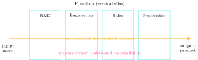

Definition
A process is a logical aggregation/sequence of linked activities, performed in different areas and responsibility centres, coordinated by a key-process owner who has total responsibility for the final result:
Processes are transversal to the formal structure drawn by the organization chart. Example: new product development takes market needs and competitor data as input, crosses R&D, engineering, sales and production, and delivers the finished product as output.Model
From functional logic to process logic
Market globalization, technological innovation and strong competition demand dynamism, fast adaptation, innovation, flexibility and efficiency. The process logic groups activities into interfunctional key processes according to their contribution to the value perceived by the customer — the idea behind Business Process Reengineering (BPR). In the process-based organization the customer can be internal or external, the process owner acts as an "internal entrepreneur", and resources are persone di valore performing value-adding activities, not people who merely perform activities.
| Process structure: advantages | Process structure: limits |
|---|---|
| customer orientation, focus on | hard to identify the right key |
| activities giving competitive advantage | processes |
| overall view of company goals, not of one | needs deep change in culture, job |
| function | design and power arrangements |
| teamwork, no internal boundaries, learning | low technical specialization, because |
| flexibility through delegation to the team | work is interfunctional |
| fewer inefficiencies in work flows |
Coordination mechanisms
| Mechanism | What it fixes |
|---|---|
| Objectives | the result each unit must reach |
| Plans and programmes | what is done, when, with which resources |
| Job descriptions (mansionari) | which tasks each position performs |
| Procedures (norme procedurali) | how the assigned tasks are performed |
| Leadership styles | how managers exercise power over subordinates |
Example of leadership style: Richard Branson described Steve Jobs as autocratic, with a meticulous eye for detail, surrounding himself with like-minded people (see Likert).
Method
- Name the customer and the output that customer values.
- Map activities, hand-offs between functions, information and waiting.
- Appoint a process owner with end-to-end responsibility.
- Measure end-to-end time, quality, cost and reliability.
- Improve the whole flow, not a single function's target.
Example
Purchasing saves EUR 2 per unit by buying large batches; inventory holding and obsolescence then cost EUR 3 per unit more. The function meets its target while the order-to-delivery process becomes EUR 1 per unit worse — the typical "partial objective" problem of the functional model that the process owner removes.
Pitfall
A process organization does not abolish functions: specialist competence still lives somewhere. Job descriptions say what, procedures say how — do not swap them.
Recall
Define process and process owner; list three advantages and the three limits of the process structure; list the five coordination mechanisms.
Picture

Processes cut horizontally across the vertical functions of the chart.